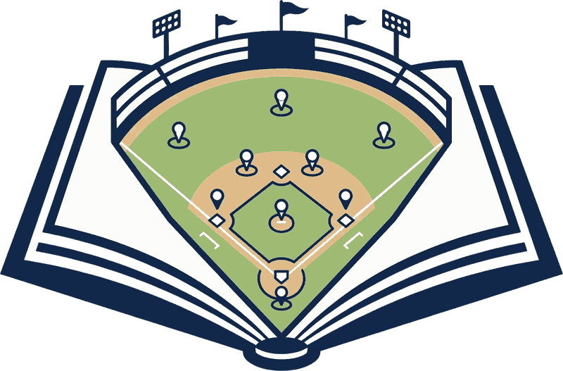

6
Inning-break quiz
Runner on
2nd
1
out
Single to
left
Where
does
your
shortstop
go?
Covers
3rd.
The 3rd baseman charges in to be the
cutoff
, so the shortstop takes the bag.
Nine players. One job each. Every situation.
This quiz brought to you by

Every player knows where to go
before the ball is hit.
Coaches
Get your
team on it.
runtheplayapp.com
Any phone, right in the browser
And in VR on a Meta Quest
Players sign in with a PIN
Quick quiz · Runner on 2nd · Single to left
Where
does
your
shortstop
go?
The 3B charges in to be the cutoff
Shortstop
covers
3rd.
Run
the
Play
runtheplayapp.com
Every situation, animated
▶ Between pitches
▶ Between innings
Pitch cut at
Bottom left
Bottom centre
Bottom right
Top left
Top centre
Top right
Loop